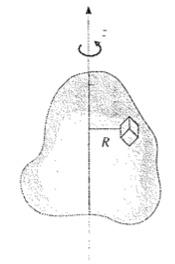
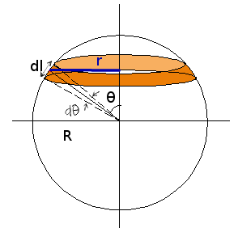
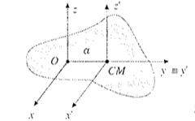

Dinamica del corpo rigido
- Definizione di corpo rigido
- Moto di un corpo rigido
- Densità
- Momento angolare
- Momento d'inerzia
Antonio Pierro @antonio_pierro_
Per consigli, suggerimenti, eventuali errori o altro potete scrivere una email a antonio.pierro[at]gmail.com
Definizione di corpo rigido
- Un corpo rigido è un sistema di punti materiali in cui le distanze tra tutte le possibili coppie di punti non possono variare.
- Quanti parametri occorrono per descrivere il moto di un corpo rigido?
Gradi di libertà di un sistema
- Il numero di parametri necessari per descrive il moto di un sistema si chiama numero di gradi di libertà del sistema.
- Un punto materiale ha tre gradi di libertà (le tre coordinate x, y, z).
- N punti materiali indipendenti hanno 3*N gradi di libertà.
Gradi di libertà di un corpo rigido
- Nel caso di un corpo rigido la condizione che le distanze tra tutte le possibili coppie di punti siano costanti, riduce i gradi di libertà del sistema da 3N (dove N è il numero di particelle) a 6.
\[
\forall i,j | i \neq j : (x_i - x_j)^2 + (y_i - y_j)^2 + (z_i - z_j)^2 - d_{ij}^2 = 0
\]
- Infatti, definita la "forma" del corpo rigido, a ogni istante la sua posizione è individuabile da sei valori: tre coordinate di un punto, tre coseni direttori di rotazione intorno agli assi x, y, z solidali al corpo.
- I coseni direttori sono proprio i coseni che la direzione della retta forma con gli assi cartesiani.
Moto di un corpo rigido
- Moto di traslazione: tutti i punti si muovono con la stessa velocità \(\vec{v}\) che coicide con \(\vec{v_{cm}}\)
- L'equazione del moto sarà: \(\vec{R} = M * \vec{a_{cm}}\)
- Moto di rotazione: tutti i punti descrivono un moto circolare con velocità angolare \(\omega\)
- L'equazione del moto sarà: \(\vec{M} = \frac{d\vec{L}}{dt}\)
- La combinazione dei due moti è definita come moto di rototraslazione.
Corpo continuo
- Supponiamo che il corpo abbia una struttura continua (non consideriamo il livello atomico).
- Consideriamo un elemento di volume infinitesimo dV del corpo e sia dm la massa contenuta in tale volume.
- Si definisce densità del corpo la quantità \(\rho = \frac{dm}{dV}\) (dove il volume dV è abbastanza piccolo affinché le proprietà del corpo siano uniformi).
- La massa del corpo sarà: \[m = \int_{V} \rho dV = \int_{V} \rho(x,y,z) dx dy dz\]
Centro di massa di un corpo continuo
- Se ora vogliamo calcolare la posizione del centro di massa di un corpo continuo, dobbiamo semplicemente dividerlo in parti infinitesime e effettuarne la media pesata. Quindi:
\[
\vec{r_{cm}} = \frac{\int_V \vec{r} * dm}{M} = \frac{\int_V \vec{r} * \rho * dV}{M}
\]
Momento d'inerzia per un sistema di n punti materiali
- Sia l'asse z, l'asse di rotazione di un corpo rigido formato da n punti materiali.
\[
\vec{L} = \sum_{n=1}^{n}\vec{L_i}
= (\sum_{n=1}^{n} \vec{r_i} \times {m_i \vec{v_i}})
= (\sum_{n=1}^{n} m_i r_i^2) \vec{\omega}
= I_z \vec{\omega}
\]
- Il coefficiente \(I_z\) si chiama momento d'inerzia del corpo rispetto all'asse z.
\[
I_z = \sum_{n=1}^{n} m_i r_i^2 = \sum_{n=1}^{n} m_i (x_i^2 + y_i^2)
\]
Momento d'inerzia per un corpo continuo
- Il momento d'inerzia per un corpo continuo si deduce da quello di un sistema rigido formato da n punti materiali:

\[
I_z = \sum_{n=1}^{n} m_i R_i^2 \Rightarrow I_z
= \int_V R^2 dm = \int_V \rho R^2dV = \int_V \rho (x^2+y^2) dV
\]
Esempi di corpi con densità di massa lineare
- Calcolo del momento d'inerzia di un anello di densità lineare \(\lambda = \frac{m}{2 \pi R}\):
\[
I = \int R^2 dm = \int \lambda R^2dl = \lambda R^2 \int dl = \lambda R^2 2\pi R = m R^2
\]
- Calcolo del momento d'inerzia di una sbarra omogenea di densità lineare \(\lambda = \frac{m}{L}\)
\[
I = \int x^2 dm = \int_{-L/2}^{L/2} x^2 \lambda dx = \lambda [\frac{x^3}{3}]_{-L/2}^{L/2} = \frac{1}{12} m L^2
\]
Esempi di corpi con densità di massa superficiale
- Momento d'inerzia di una sfera avente densità superficiale \(\sigma\):
\[
\sigma = \frac{m}{4 \pi R^2} \quad r = R \sin{\theta} \quad dl = R d\theta
\quad \int_0^\pi (\sin{\theta})^3 d\theta =\frac{4}{3}
\]
\[
I = \int r^2 dm = \sigma \int_S r^2 dS =
\sigma \int_0^\pi R^2 \sin{\theta}^2 2 \pi R \sin{\theta} R d\theta = \frac{2}{3} M R^2
\]

Esempi di corpi con densità di massa volumetrica
- Momento d'inerzia di un cilindro di densità \(\rho = \frac{m}{\pi R^2 h} \):
\[
I = \int r^2 dm = \int_0^R r^2 \rho \pi h r dr = \frac{1}{2}mR^2
\]
-
Momento d'inerzia di una sfera piena di densità \(\rho\):
se si scompone un solido in parti di qualunque forma, il momento d'inerzia totale rispetto a un asse dato è la somma dei momenti d'inerzia delle singole parti rispetto allo stesso asse.
\[
I = \int dI = \int_0^M \frac {2}{3}r^2dm \quad \rho = \frac {m}{\frac{4}{3}\pi R^3} dV = 4 \pi r^2 dr
\]
\[
I = \int dI = \frac {2}{3} \rho \int_0^R r^2 4 \pi r^2 dr = \frac{2}{5} M R^2
\]
Teorema di Huygens-Steiner
- Nei precedenti esempi, per il calcolo dei momenti d'inerzia, abbiamo scelto particolari assi (passanti per il centro di massa) che ci hanno permesso di semplificare il calcolo.
-
Il teorema di Huygens-Steiner stabilisce che il momento d'inerzia di un corpo di massa m rispetto a un asse che si trova a una distanza d dal centro di massa del corpo è dato da
\[
I = I_{cm} + m d^2
\]
-
\(I_{cm}\) è il momento d'inerzia del corpo rispetto a un asse parallelo al primo e passante per il centro di massa.
Dimostrazione del teorema di Huygens-Steiner
- Per dimostrare il teorema consideriamo due assi z e \(z^{'}\), tra loro paralleli, distanti "a" e con asse \(z^{'}\) passante per il centro di massa.

- Per un generico punto \(P_i\), il momento d'inerzia rispetto all'asse z sarà:
\[
m_i(x_i^2 + y_i^2), \quad x=x^{'}, \quad y=y^{'} + a, \quad z=z^{'}
\]
- Se sommiamo i momenti d'inerzia di tutti i punti:
\[
I = \sum_i m_i(x_i^2 + y_i^2) = \sum_i (x_i^{'2} + (y_i^{'} + a)^2) \Rightarrow
\]
\[
I =\sum_i (x_i^{'2} + y_i^{'2}) + \sum_i m_i a^2 + 2 a \sum_i m_i y_i^{'} = I_{z^{'}} + m a^2
\]
\[
\text{Sapendo che} \quad 2 a \sum_i m_i y_i^{'} = m y_{cm}^{'} = 0
\]
Momenti d'inerzia rispetto ad assi passanti per il bordo
\[
\text{Anello di raggio r} \Rightarrow I_{cm} = m r^2 \Rightarrow I_{bordo} = 2mr^2
\]
\[
\text{Disco di raggio r} \Rightarrow I_{cm} = \frac{1}{2}m r^2 \Rightarrow I_{bordo} = \frac{3}{2}m r^2
\]
\[
\text{Sfera di raggio r} \Rightarrow I_{cm} = \frac{2}{5}m r^2 \Rightarrow I_{bordo} = \frac{7}{2}m r^2
\]
\[
\text{Asta lunga d} \Rightarrow I_{cm} = \frac{1}{12}m d^2 \Rightarrow I_{bordo} = \frac{1}{3}m d^2
\]